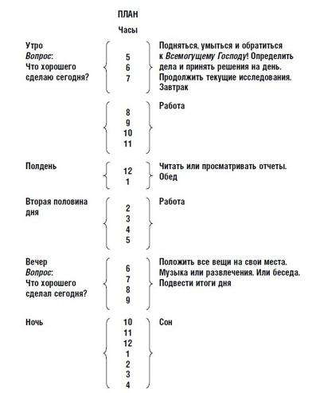

Kак правильно составить режим дня – одна из самых важных тем здорового образа жизни. каждый человек сталкивается с необходимостью распределять свое время. иногда, как в случае с работой, это необходимость. иногда, например, при планировании максимально продуктивного времяпрепровождения или отдыха – это целесообразность. правильный режим дня подразумевает рациональное использование времени сна, личной гигиены, питания, работы, отдыха, занятий спортом и физической активности. планирование распорядка дня и следование ему делает человека дисциплинированным, развивает организованность и целенаправленность. в результате чего вырабатывается и режим жизни, в котором минимизированы затраты времени и энергии на несущественные вещи.
Режим дня – продуманный распорядок действий на день, планирование времени с целью его рационального и максимально эффективного распределения.
Как говорилось выше, распорядок имеет большое значение для самодисциплины и организованности любого человека, а также он важен для многих других прикладных аспектов нашей жизни. К примеру, режим дня играет не последнюю роль в построении тренировочных программ, составлении диет и организации правильного питания в целом, выборе самых продуктивных часов нашей жизни для работы или творчества.
Как говорилось выше, распорядок имеет большое значение для самодисциплины и организованности любого человека, а также он важен для многих других прикладных аспектов нашей жизни. К примеру, режим дня играет не последнюю роль в построении тренировочных программ, составлении диет и организации правильного питания в целом, выборе самых продуктивных часов нашей жизни для работы или творчества.
Режим дня нужен для того, чтобы время не пользовалось нашей рассеянностью. Каждый человек сталкивался в своей деятельности со спешкой, ощущением аморфности времени, неразберихой в личных и рабочих делах. Мы не всегда можем отчетливо сказать, сколько времени мы потратили на то или иное занятие, поскольку не считаем необходимым постоянно контролировать использование своего времени. Однако именно распорядок всего дня целиком помогает наиболее разумно и эффективно распределить свое время. Кроме того, без навыка успешного планирования своего дня, человек не научится строить и более долгосрочные планы, тем более что спланировать свой дневной график полностью не так сложно, ведь:
Oтметим также тот факт, что употребление эпитета «правильный» по отношению к режиму дня, в некоторой мере условно. Индивидуально для каждого человека понятие правильного распорядка может быть разным и зависеть от многих факторов: работы, привычек, особенностей организма. Но, как утверждают эксперты (психологи и медики), физиологические аспекты функционирования основных жизненных систем людей идентичны. На основе этого возможно составить универсальный, содержащий общие рекомендации режим, который в той или иной мере подойдет каждому. Опираясь на предложенные рекомендации с учетом своих индивидуальных потребностей, можно выработать распорядок суток, который оптимально подойдет именно вам.
Без учета суточных биологических ритмов организма человеку вряд ли удастся составить организованный и эффективный режим дня. Эксперименты показывают, что если человек, привыкший обычно просыпаться в 7 утра, один день будет спать до 4 дня, то после пробуждения он будет чувствовать усталость, разбитость, замедление темпов активности. Такое состояние возникает в результате игнорирования особенностей биологических ритмов, биологических часов и циркадных ритмов.
Биологические ритмы (биоритмы) – периодически повторяющиеся изменения характера и интенсивности биологических процессов и явлений в живых организмах, от которых зависит их функциональность.
Биоритмы бывают внутренними (эндогенными), зависящими от биологических часов организма, и внешними (экзогенными), которые проявляются в синхронизации внутренних циклов (смена сна и бодрствования) с внешними раздражителями (смена дня и ночи). В плане составления режима дня нас больше всего интересуют циркадные ритмы – циклические колебания интенсивности различных биологических процессов, связанные со сменой дня и ночи, период которых приблизительно равен 24 часам.
Многие исследователи до недавнего времени относили изучение биоритмов к неакадемическому направлению физиологии, но благодаря последним исследованиям ситуация несколько изменилась. Так, в человеческом мозге обнаружили крошечный кластер в гипоталамусе размером, примерно, 20000 нейронов, который контролирует многие циркадные ритмы организма. Известный как супрахиазматическое ядро (SCN), этот центр выполняет работу внутреннего кардиостимулятора тела и влияет на биоритмы человека.
Психологи часто обращаются к известному разделению людей в зависимости от периода их активности на «сов» и «жаворонков». Первым тяжело вставать рано утром, а пик их активности приходится на вечерние и ночные часы. Вторые, наоборот, утром деятельны, а к вечеру быстро теряют запасы энергии. Интересно, что во многих странах Африки практически нет «сов», связано это с тем, что многие поселки и города не электрифицированы, а значит, когда солнце садится, местная жизнь замирает. Помимо «сов» и «жаворонков» существует также переходный вариант – это так называемые «голуби», которые объединяют черты обеих категорий: такие люди могут просыпаться и одинаково активно и эффективно заниматься делами в разное время суток. Кроме того, различают еще два типа людей: малоспящие и «сони». Малоспящие активны и рано утром, и поздно вечером, а для восстановления сил им требуется всего 3-4 часа сна (к таким людям относился, например, известный изобретатель Т. Эдисон). «Сони», напротив, неактивны, чувствуют усталость и утомление в любое время суток
Предложенная классификация довольно условна, поскольку, как утверждают психотерапевты, нормальный здоровый человек при желании постепенно может изменить свой тип бодрствования без вреда для организма. Главное – наличие силы воли и правильно выбранной стратегии.К примеру, многим политикам, бизнесменам, спортсменам, которые много путешествуют по всему миру, часто приходится перестраивать свои циркадные ритмы в соответствии с разницей во времени между городами, чтобы не терять эффективности в работе при смене часовых поясов. На практике даже выработаны специальные рекомендации, которые помогут максимально безболезненно перестроить свой режим после смены часового пояса. Для этого вам следует:
Так выглядело расписание дня Б. Франклина, размещенное им в своей «Автобиографии»:

Как составить режим дня школьника (подростка)?
| 7:00 | Подъем |
| 7:00-7:30 | Зарядка, умывание |
| 8:30-13:05 | Занятия в школе. |
| 13:30-14:00 | Обед |
| 14:00-15:45 | Прогулки, времяпровождение на свежем воздухе |
| 15:45-16:00 | Полдник |
| 16:00-18:00 | Самоподготовка, домашнее задание |
| 18:00-19:00 | Свободное время, отдых |
| 19:00-19:30 | Ужин |
| 19:30-20:00 | Свободное время, работа по дому |
| 20:00-20:30 | Вечерняя прогулка |
| 20:30-21:00 | Подготовка ко сну |
| 21:00 | Сон |